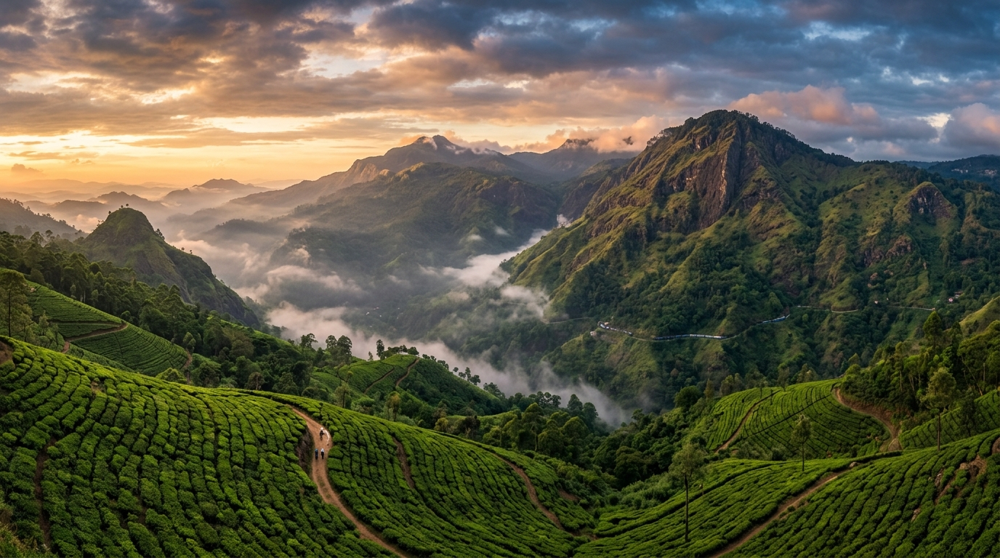

Bridge
Bridge
Nine Arches Bridge
Built during British colonial rule, this stone railway viaduct rises gracefully above the jungle canopy. It's one of the most photographed structures in Sri Lanka.
View Details
Where mountains meet adventure.
Nestled among Sri Lanka's central highlands, Ella is a small town with extraordinary landscapes — emerald tea estates, misty peaks, colonial-era railways, and cascading waterfalls.

Ella sits at roughly 1,041 metres above sea level in Sri Lanka's Badulla District, surrounded by the rolling green hills of the Uva Province. Originally a quiet hill station, it has become one of the island's most popular travel destinations — and it's easy to see why.
The town offers a rare combination of accessible mountain scenery, highland tea culture, and relaxed village charm. Visitors arrive by the famous Kandy–Ella railway, widely considered one of the most scenic train journeys in the world, and find a compact destination where dramatic viewpoints, forest trails, and waterfalls are all within walking or short tuk-tuk distance.
Learn More About EllaFrom misty mountain trails to the aroma of freshly picked Ceylon tea, Ella offers experiences that stay with you long after you leave.
Trek to panoramic summits like Little Adam's Peak and Ella Rock for sweeping views across valleys and tea country.
Walk through terraced tea estates, watch the plucking process, and taste fresh Ceylon tea at its source in the highlands.
Explore waterfalls, caves, and forest trails. Ella's compact geography puts genuine adventure within easy reach.
Ride the iconic blue trains through tunnels, over viaducts, and past endless green hillsides on the Kandy–Ella line.
Ella's most celebrated landmarks are all within a short distance of the town centre.
Bridge
Built during British colonial rule, this stone railway viaduct rises gracefully above the jungle canopy. It's one of the most photographed structures in Sri Lanka.
View Details Mountain
Mountain
A popular and accessible hike through tea estates leading to a viewpoint with stunning 360-degree panoramas of the surrounding hill country.
View Details Mountain
Mountain
A more challenging trek that rewards hikers with dramatic cliff-edge views. The trail passes through tea plantations and forest before reaching the summit.
View Details Waterfall
Waterfall
One of Sri Lanka's widest waterfalls, Ravana Falls is located along the Ella–Wellawaya road and is easily accessible from the town centre.
View Details
The railway between Kandy and Ella is regularly cited as one of the most beautiful train journeys in the world. The line climbs through Sri Lanka's central highlands, passing through tunnels, across viaducts, and alongside terraced tea plantations.
Trains run several times a day, and the journey takes roughly six to seven hours — though most travellers agree the time passes quickly. Sitting by an open door with the mountain air rushing past is an experience that defines a visit to Ella.
Explore ActivitiesSend us an inquiry and we'll help you plan an unforgettable journey through Sri Lanka's hill country.
Send an Inquiry